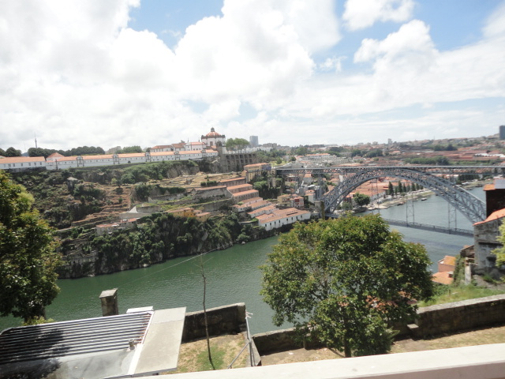

OS MELHORES DOCES
Os melhores doces, são aqueles que mais gostamos e porque não aprendermos a fazer para degustarmos e presentear as pessoas que mais amamos com essas delícias? Minhas receitas prediletas estão relacionadas com os doces, as quais eu mais me dediquei a aprender. Por isso compartilho com vocês uma receita deliciosa de Biscoito de Castanha do Pará, fácil de fazer e ótima para acompanhar aquele cafezinho da tarde. Aproveite!
Ingredientes:
- 500 gramas de farinha de trigo
- 250 gramas de manteiga
- 200 gramas de açucar
- 100 gramas de farinha de castanha do pará
- 1 ovo
Modo de Preparo:
Misture tudo com as mãos até ficar uma massa lisa, faça uma bola, embrulhe em plástico bollha e leve a geladeira para descansar por 1 hora. Depois abra a massa, corte com cortador e leve para assar a 180 graus em forno pré aquecido. Deixe esfriar e passe no açúcar cristal.
FLORES PARA DECORAR
Se você procura algo simples para a decoração da sua casa, aposte nas flores. De cores e formatos variados, elas trazem elegância e beleza a qualquer cômodo da sua casa.

VIAGENS PARA FICAR NA MEMÓRIA
Se tem uma coisa que me faz feliz é viajar.... E o Brasil está recheado de lugares incríves, e por mais que você viaje, sempre há um lugar novo para conhecer. Aproveite as belezas naturais que temos em nosso País do Campo ao Cerrado, do Sertão ao Mar, há paisagens para todos os gostos.
